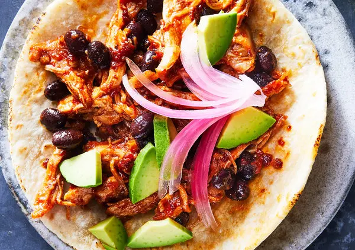

Chipotle Honey Chicken Tacos

Description
These may be the easiest tacos you ever make, but you would never know with the flavor they pack.
The recipe hinges on two ingredients: canned chiptole peppers and honey. And best yet, they are quick to make!
Ingredients
- Chicken Thighs
- Honey
- Onion Powder
- Garlic Powder
- Cumin
- Salt
- 1-4 Chipotle Peppers
- Adobo Sauce
- Black Beans
- Lime Juice
- Avocado
- Tortillas
- For Pickled Onions
- Red Onion
- Apple Cider Vinegar
- Sugar
Instructions
- Mix the first 8 ingredients into the pressure cooker.
- Set the pressure cooker to 13 minutes.
- After cooking, allow the pressure to release naturally for 5 minutes before releasing the rest.
- Slice the red onion and bring to boil in the apple cider vinegar and sugar.
- While waiting on the vinegar to boil, shred the chicken.
- Garnish tacos with the avocado and pickled onion and then enjoy!